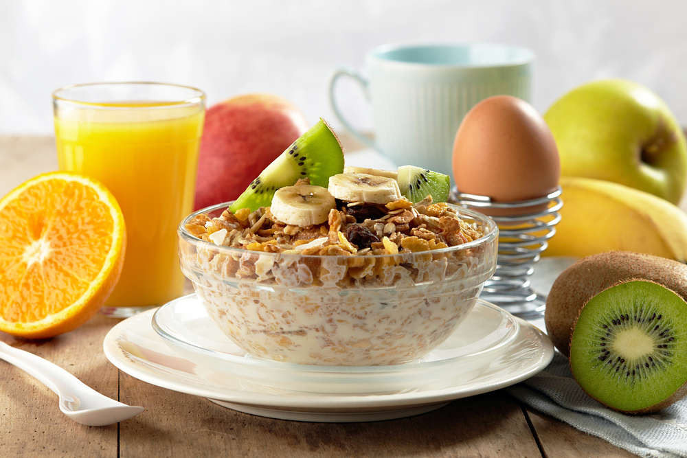

Se dice que el desayuno es la comida más importante del día y es muy importante partir con la energía necesaria para partir bien el día.
El desayuno debe contener hidratos de carbono (preferiblemente de lenta absorción como los que aportan los cereales integrales), proteínas como las que aportan los frutos secos, los huevos, las carnes magras (pollo o pavo), el queso fresco o sus símiles vegetales, fibra, vitaminas y minerales, como los que están presentes en leches vegetales, cereales integrales y sobre todo en fruta y verdura frutos secos, avena en copos o granola, entre otros. En el desayuno se debería ingerir entre el 20 y el 25% de la energía del día